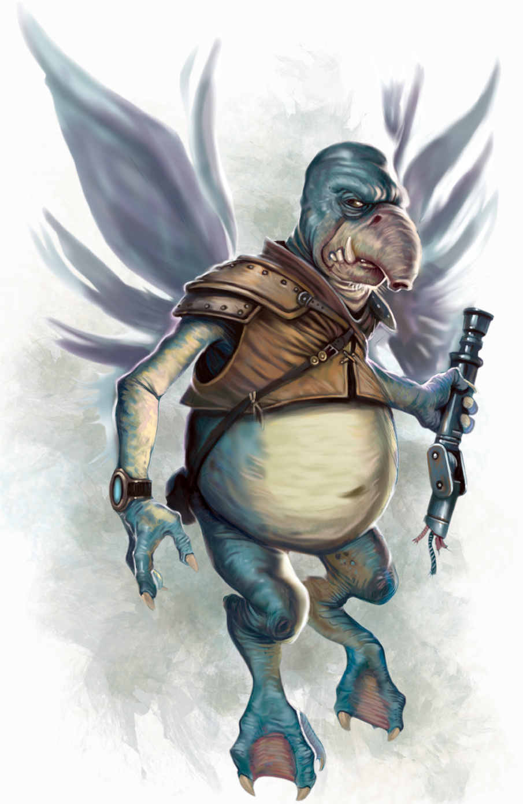

Toydarian
Special Abilities: Toydarians are smaller than average and count as silhouette 0.
Hoverer: Toydarians have wings that allow them to hover slightly off of the ground. When hovering, Toydarians do not have to spend additional maneuvers when navigating difficult terrain. Otherwise, their wings allow them no extra capabilities beyond those of a normal, walking character
Prideful, stubborn, and strong willed, Toydarians are merchants and opportunity seekers who roam the galaxy searching out their fortunes. Their reputations for bad tempers and con jobs, as well as a history of being lackeys for the Hutts, makes for difficult going for many Toydarians, but their resistance to Force manipulation is seen by many others as highly valuable.
Toydarians have smallish, squat bodies that perpetually hover over the ground, thanks to a pair of wings on their back and an abundance of natural gasses absorbed into their frames. Stubby protruding snouts dominate their craggy faces, and their spindly arms and legs end with three fingers and three toes, respectively. One of their most interesting physical features has to do with their brains; they are completely immune to any manipulations via the Force.
Toydarians have extremely active metabolisms, and physical exertion of any kind burns up massive amounts of calories. As such, they are in constant need of food, eating large quantities throughout the day. Where available. Toydarians take advantage of highly concentrated processed foods that quickly fulfill their energy needs. In ancient times, Toydarian tribes fought most over food supplies.
Toydarians are well known for having a natural body odor similar to sweetspice, making them pleasant to be around for at least their effect on the local air.
The Hutts subjugated the Toydarians long ago, yet it had little negative impact on their society's development. Effectively a grand business merger, the Toydarians enjoyed a rise in their standard of living in exchange for serving Hutt business interests. Toydarians have happily maintained a healthy distance from galactic affairs, more or less ignoring the rise of the Empire except as it impacts their mercantile interests.
Most Toydarians make their way within Hutt space, generally serving the interests of the powerful crime lords and helping manage the businesses and bureaucracies that make it all work. Many, however, prefer to employ their natural gifts for business and trade elsewhere, finding the places in the galaxy where they can carve out their niche while wheeling and dealing with anyone who can pay for what they choose to sell.
Toydaria is a world of muck, mud, and swamps, covered in swarms of bugs and massive quantities of algae. Monsoons, plagues of fungal origin, and nasty predators like the huge carnivorous grabworms make the planet generally unpleasant for almost anyone who visits, yet Toydarians have a profound love and pride in their homeworld.
Toydaria is the native tongue of the species, and most also speak Huttese fluently. Though most Toydarians endeavor to speak Basic to do business, they tend to only be literate in their native tongue.
Despite their odd appearance and mannerisms, Toydarians have a gift for engaging people in deals and conversation. That they don't readily present themselves as a physical threat helps ease others, though anyone who knows of their reputation knows to check his pockets after meeting one.
Toydarian civilization consists of a feudal vassal system ruled over by a king. Members of Toydarian nobility constantly vie with one another for their lord's favor and personal prestige, believing the constant bickering to be a way to sort out the loyal from the treacherous, the weak from the strong, the crafty from the crude.
Some members of the species take to this sort of competition effortlessly, and the power struggle permeates down to the lowest strata of society. Others resist the constant jockeying for supremacy and strike out on their own, determined to be the masters of their own domains.